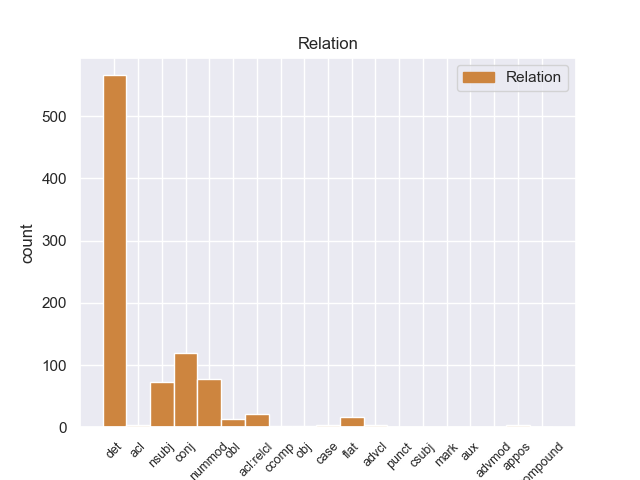

Distribution of features within this leaf



Agreement Rules sorted by frequency.
- When the dependent token is the determiner(det) of the head token, and the dependent token is PRON.
1 Ο _ _ _ _ 0 _ _ _
2 λόγος _ _ _ _ 0 _ _ _
3 που _ _ _ _ 0 _ _ _
4 διαθέτουμε _ _ _ _ 0 _ _ _
5 κανόνες _ _ _ _ 0 _ _ _
6 για _ _ _ _ 0 _ _ _
7 τις _ _ _ _ 0 _ _ _
8 κρατικές _ _ _ _ 0 _ _ _
9 ενισχύσεις _ _ _ _ 0 _ _ _
10 είναι _ _ _ _ 0 _ _ _
11 η _ _ _ _ 0 _ _ _
12 διασφάλιση _ _ _ _ 0 _ _ _
13 της _ _ _ _ 0 _ _ _
14 ορθής _ _ _ _ 0 _ _ _
15 λειτουργίας _ _ _ _ 0 _ _ _
16 της _ _ _ _ 0 _ _ _
17 κοινής _ _ _ _ 0 _ _ _
18 αγοράς _ _ _ _ 0 _ _ _
19 και _ _ _ _ 0 _ _ _
20 πρέπει _ _ _ _ 0 _ _ _
21 να _ _ _ _ 0 _ _ _
22 καταργήσουμε _ _ _ _ 0 _ _ _
23 τους _ _ _ _ 0 _ _ _
24 φραγμούς _ _ _ _ 0 _ _ _
25 σ _ _ _ _ 0 _ _ _
26 τον _ _ _ _ 0 _ _ _
27 ανταγωνισμό _ _ _ _ 0 _ _ _
28 και _ _ _ _ 0 _ _ _
29 σ _ _ _ _ 0 _ _ _
30 το _ _ _ _ 0 _ _ _
31 ελεύθερο _ _ _ _ 0 _ _ _
32 εμπόριο _ _ _ _ 0 _ _ _
33 προκειμένου _ _ _ _ 0 _ _ _
34 να _ _ _ _ 0 _ _ _
35 επιτρέψουμε _ _ _ _ 0 _ _ _
36 σ _ _ _ _ 0 _ _ _
37 την _ _ _ _ 0 _ _ _
38 Επιτροπή _ _ _ _ 0 _ _ _
39 να _ _ _ _ 0 _ _ _
40 ασκεί _ _ _ _ 0 _ _ _
41 αστυνόμευση _ _ _ _ 0 _ _ _
42 , _ _ _ _ 0 _ _ _
43 ενώ _ _ _ _ 0 _ _ _
44 το _ _ _ _ 0 _ _ _
45 Συμβούλιο _ _ _ _ 0 _ _ _
46 θα _ _ _ _ 0 _ _ _
47 έπρεπε _ _ _ _ 0 _ _ _
48 πραγματικά _ _ _ _ 0 _ _ _
49 να _ _ _ _ 0 _ _ _
50 ντρέπεται _ _ _ _ 0 _ _ _
51 που _ _ _ _ 0 _ _ _
52 προκαλεί _ _ _ _ 0 _ _ _
53 την _ _ _ _ 0 _ _ _
54 Επιτροπή _ _ _ _ 0 _ _ _
55 σε _ _ _ _ 0 _ _ _
56 αυτόν αυτός PRON PRON Case=Acc|Gender=Masc|Number=Sing|Person=3|PronType=Dem 59 det _ _
57 τον _ _ _ _ 0 _ _ _
58 συγκεκριμένο _ _ _ _ 0 _ _ _
59 τομέα τομέας NOUN NOUN Case=Acc|Gender=Masc|Number=Sing 0 _ _ _
60 . _ _ _ _ 0 _ _ _
1 « _ _ _ _ 0 _ _ _
2 Δεκαεννέα δεκαεννέα NUM NUM Case=Nom|Gender=Masc|Number=Plur|NumType=Card 3 nummod _ _
3 κρατούμενοι κρατούμενος NOUN NOUN Case=Nom|Gender=Masc|Number=Plur 0 _ _ _
4 , _ _ _ _ 0 _ _ _
5 μέλη _ _ _ _ 0 _ _ _
6 της _ _ _ _ 0 _ _ _
7 Αλ _ _ _ _ 0 _ _ _
8 Κάιντα _ _ _ _ 0 _ _ _
9 και _ _ _ _ 0 _ _ _
10 της _ _ _ _ 0 _ _ _
11 Ανσάρ _ _ _ _ 0 _ _ _
12 αλ-Σούνα _ _ _ _ 0 _ _ _
13 , _ _ _ _ 0 _ _ _
14 απέδρασαν _ _ _ _ 0 _ _ _
15 σ _ _ _ _ 0 _ _ _
16 τις _ _ _ _ 0 _ _ _
17 03:30 _ _ _ _ 0 _ _ _
18 από _ _ _ _ 0 _ _ _
19 τη _ _ _ _ 0 _ _ _
20 φυλακή _ _ _ _ 0 _ _ _
21 , _ _ _ _ 0 _ _ _
22 αφού _ _ _ _ 0 _ _ _
23 αποκοίμισαν _ _ _ _ 0 _ _ _
24 τους _ _ _ _ 0 _ _ _
25 δεσμοφύλακες _ _ _ _ 0 _ _ _
26 και _ _ _ _ 0 _ _ _
27 τους _ _ _ _ 0 _ _ _
28 υπόλοιπους _ _ _ _ 0 _ _ _
29 κρατούμενους _ _ _ _ 0 _ _ _
30 . _ _ _ _ 0 _ _ _
1 Οι _ _ _ _ 0 _ _ _
2 δύο _ _ _ _ 0 _ _ _
3 προτάσεις _ _ _ _ 0 _ _ _
4 οδηγίας _ _ _ _ 0 _ _ _
5 σχετικά _ _ _ _ 0 _ _ _
6 με _ _ _ _ 0 _ _ _
7 τη _ _ _ _ 0 _ _ _
8 σύναψη _ _ _ _ 0 _ _ _
9 συμβάσεων _ _ _ _ 0 _ _ _
10 θα _ _ _ _ 0 _ _ _
11 πρέπει _ _ _ _ 0 _ _ _
12 επομένως _ _ _ _ 0 _ _ _
13 να _ _ _ _ 0 _ _ _
14 επιτρέψουν _ _ _ _ 0 _ _ _
15 σ _ _ _ _ 0 _ _ _
16 την _ _ _ _ 0 _ _ _
17 πρωτοβάθμια πρωτοβάθμιος ADJ ADJ Case=Acc|Gender=Fem|Number=Sing 0 _ _ _
18 και _ _ _ _ 0 _ _ _
19 δευτεροβάθμια δευτεροβάθμιος ADJ ADJ Case=Acc|Gender=Fem|Number=Sing 17 conj _ _
20 αυτοδιοίκηση _ _ _ _ 0 _ _ _
21 , _ _ _ _ 0 _ _ _
22 καθώς _ _ _ _ 0 _ _ _
23 και _ _ _ _ 0 _ _ _
24 σ _ _ _ _ 0 _ _ _
25 τις _ _ _ _ 0 _ _ _
26 κρατικές _ _ _ _ 0 _ _ _
27 αρχές _ _ _ _ 0 _ _ _
28 να _ _ _ _ 0 _ _ _
29 προμηθεύονται _ _ _ _ 0 _ _ _
30 αγαθά _ _ _ _ 0 _ _ _
31 και _ _ _ _ 0 _ _ _
32 υπηρεσίες _ _ _ _ 0 _ _ _
33 με _ _ _ _ 0 _ _ _
34 τέτοιο _ _ _ _ 0 _ _ _
35 τρόπο _ _ _ _ 0 _ _ _
36 ώστε _ _ _ _ 0 _ _ _
37 η _ _ _ _ 0 _ _ _
38 επιβάρυνση _ _ _ _ 0 _ _ _
39 σ _ _ _ _ 0 _ _ _
40 το _ _ _ _ 0 _ _ _
41 περιβάλλον _ _ _ _ 0 _ _ _
42 να _ _ _ _ 0 _ _ _
43 είναι _ _ _ _ 0 _ _ _
44 όσο _ _ _ _ 0 _ _ _
45 το _ _ _ _ 0 _ _ _
46 δυνατόν _ _ _ _ 0 _ _ _
47 πιο _ _ _ _ 0 _ _ _
48 περιορισμένη _ _ _ _ 0 _ _ _
49 . _ _ _ _ 0 _ _ _
1 Αυτό αυτός PRON PRON Case=Nom|Gender=Neut|Number=Sing|Person=3|PronType=Dem 5 nsubj _ _
2 είναι _ _ _ _ 0 _ _ _
3 ένα _ _ _ _ 0 _ _ _
4 θετικό _ _ _ _ 0 _ _ _
5 συμπέρασμα συμπέρασμα NOUN NOUN Case=Nom|Gender=Neut|Number=Sing 0 _ _ _
6 ως _ _ _ _ 0 _ _ _
7 προς _ _ _ _ 0 _ _ _
8 την _ _ _ _ 0 _ _ _
9 αξιολόγηση _ _ _ _ 0 _ _ _
10 της _ _ _ _ 0 _ _ _
11 δεύτερης _ _ _ _ 0 _ _ _
12 φάσης _ _ _ _ 0 _ _ _
13 εφαρμογής _ _ _ _ 0 _ _ _
14 του _ _ _ _ 0 _ _ _
15 κοινοτικού _ _ _ _ 0 _ _ _
16 αυτού _ _ _ _ 0 _ _ _
17 προγράμματος _ _ _ _ 0 _ _ _
18 για _ _ _ _ 0 _ _ _
19 την _ _ _ _ 0 _ _ _
20 παιδεία _ _ _ _ 0 _ _ _
21 . _ _ _ _ 0 _ _ _
1 Αυτός _ _ _ _ 0 _ _ _
2 ο _ _ _ _ 0 _ _ _
3 χώρος _ _ _ _ 0 _ _ _
4 που _ _ _ _ 0 _ _ _
5 αποτελεί _ _ _ _ 0 _ _ _
6 μια _ _ _ _ 0 _ _ _
7 πλούσια _ _ _ _ 0 _ _ _
8 μορφολογία _ _ _ _ 0 _ _ _
9 εδάφους _ _ _ _ 0 _ _ _
10 με _ _ _ _ 0 _ _ _
11 λίμνες _ _ _ _ 0 _ _ _
12 , _ _ _ _ 0 _ _ _
13 βουνά _ _ _ _ 0 _ _ _
14 και _ _ _ _ 0 _ _ _
15 ποταμούς _ _ _ _ 0 _ _ _
16 διασχίζονταν _ _ _ _ 0 _ _ _
17 από _ _ _ _ 0 _ _ _
18 την _ _ _ _ 0 _ _ _
19 αρχαιότητα _ _ _ _ 0 _ _ _
20 από _ _ _ _ 0 _ _ _
21 τρεις _ _ _ _ 0 _ _ _
22 κύριες _ _ _ _ 0 _ _ _
23 οδούς _ _ _ _ 0 _ _ _
24 , _ _ _ _ 0 _ _ _
25 τις _ _ _ _ 0 _ _ _
26 κοιλάδες _ _ _ _ 0 _ _ _
27 του _ _ _ _ 0 _ _ _
28 Αξιού Αξιός PROPN PROPN Case=Gen|Gender=Masc|Number=Sing 0 _ _ _
29 και _ _ _ _ 0 _ _ _
30 του _ _ _ _ 0 _ _ _
31 Στρυμόνα Στρυμόνας PROPN PROPN Case=Gen|Gender=Masc|Number=Sing 28 conj _ _
32 που _ _ _ _ 0 _ _ _
33 συνέδεαν _ _ _ _ 0 _ _ _
34 την _ _ _ _ 0 _ _ _
35 κεντρική _ _ _ _ 0 _ _ _
36 Ευρώπη _ _ _ _ 0 _ _ _
37 με _ _ _ _ 0 _ _ _
38 το _ _ _ _ 0 _ _ _
39 Αιγαίο _ _ _ _ 0 _ _ _
40 και _ _ _ _ 0 _ _ _
41 τη _ _ _ _ 0 _ _ _
42 ρωμαϊκή _ _ _ _ 0 _ _ _
43 Εγναντία _ _ _ _ 0 _ _ _
44 οδό _ _ _ _ 0 _ _ _
45 που _ _ _ _ 0 _ _ _
46 διερχόμενη _ _ _ _ 0 _ _ _
47 από _ _ _ _ 0 _ _ _
48 το _ _ _ _ 0 _ _ _
49 Μοναστήρι _ _ _ _ 0 _ _ _
50 και _ _ _ _ 0 _ _ _
51 τη _ _ _ _ 0 _ _ _
52 Θεσσαλονίκη _ _ _ _ 0 _ _ _
53 έφθανε _ _ _ _ 0 _ _ _
54 σ _ _ _ _ 0 _ _ _
55 τη _ _ _ _ 0 _ _ _
56 Κωνσταντινούπολη _ _ _ _ 0 _ _ _
57 . _ _ _ _ 0 _ _ _
1 Για _ _ _ _ 0 _ _ _
2 το _ _ _ _ 0 _ _ _
3 ζήτημα _ _ _ _ 0 _ _ _
4 αυτό _ _ _ _ 0 _ _ _
5 έχει _ _ _ _ 0 _ _ _
6 ξεκινήσει _ _ _ _ 0 _ _ _
7 και _ _ _ _ 0 _ _ _
8 μία _ _ _ _ 0 _ _ _
9 νομική _ _ _ _ 0 _ _ _
10 εξέταση _ _ _ _ 0 _ _ _
11 και _ _ _ _ 0 _ _ _
12 ο _ _ _ _ 0 _ _ _
13 Γενικός _ _ _ _ 0 _ _ _
14 Εισαγγελέας _ _ _ _ 0 _ _ _
15 αποφάνθηκε _ _ _ _ 0 _ _ _
16 με _ _ _ _ 0 _ _ _
17 σαφήνεια _ _ _ _ 0 _ _ _
18 ότι _ _ _ _ 0 _ _ _
19 είναι _ _ _ _ 0 _ _ _
20 σωστή σωστός ADJ ADJ Case=Nom|Gender=Fem|Number=Sing 0 _ _ _
21 η _ _ _ _ 0 _ _ _
22 δική _ _ _ _ 0 _ _ _
23 μου _ _ _ _ 0 _ _ _
24 άποψη _ _ _ _ 0 _ _ _
25 , _ _ _ _ 0 _ _ _
26 και _ _ _ _ 0 _ _ _
27 άποψη _ _ _ _ 0 _ _ _
28 της _ _ _ _ 0 _ _ _
29 Επιτροπής _ _ _ _ 0 _ _ _
30 Περιβάλλοντος _ _ _ _ 0 _ _ _
31 , _ _ _ _ 0 _ _ _
32 και _ _ _ _ 0 _ _ _
33 όχι _ _ _ _ 0 _ _ _
34 αυτή αυτός PRON PRON Case=Nom|Gender=Fem|Number=Sing|Person=3|PronType=Dem 20 conj _ _
35 της _ _ _ _ 0 _ _ _
36 Επιτροπής _ _ _ _ 0 _ _ _
37 . _ _ _ _ 0 _ _ _
1 Σ _ _ _ _ 0 _ _ _
2 το _ _ _ _ 0 _ _ _
3 μεταξύ _ _ _ _ 0 _ _ _
4 , _ _ _ _ 0 _ _ _
5 τα _ _ _ _ 0 _ _ _
6 κρατικά _ _ _ _ 0 _ _ _
7 μέσα _ _ _ _ 0 _ _ _
8 ενημέρωσης _ _ _ _ 0 _ _ _
9 της _ _ _ _ 0 _ _ _
10 Συρίας _ _ _ _ 0 _ _ _
11 μετέδωσαν _ _ _ _ 0 _ _ _
12 την _ _ _ _ 0 _ _ _
13 Κυριακή _ _ _ _ 0 _ _ _
14 ότι _ _ _ _ 0 _ _ _
15 " _ _ _ _ 0 _ _ _
16 το _ _ _ _ 0 _ _ _
17 Ανώτατο _ _ _ _ 0 _ _ _
18 Δικαστικό _ _ _ _ 0 _ _ _
19 Συμβούλιο _ _ _ _ 0 _ _ _
20 της _ _ _ _ 0 _ _ _
21 Συρίας _ _ _ _ 0 _ _ _
22 ακύρωσε _ _ _ _ 0 _ _ _
23 νομικές _ _ _ _ 0 _ _ _
24 διαδικασίες _ _ _ _ 0 _ _ _
25 σε _ _ _ _ 0 _ _ _
26 βάρος _ _ _ _ 0 _ _ _
27 προσωπικοτήτων _ _ _ _ 0 _ _ _
28 της _ _ _ _ 0 _ _ _
29 Αντιπολίτευσης _ _ _ _ 0 _ _ _
30 που _ _ _ _ 0 _ _ _
31 βρίσκονται _ _ _ _ 0 _ _ _
32 σ _ _ _ _ 0 _ _ _
33 το _ _ _ _ 0 _ _ _
34 εξωτερικό _ _ _ _ 0 _ _ _
35 , _ _ _ _ 0 _ _ _
36 έτσι _ _ _ _ 0 _ _ _
37 ώστε _ _ _ _ 0 _ _ _
38 να _ _ _ _ 0 _ _ _
39 μπορέσουν _ _ _ _ 0 _ _ _
40 να _ _ _ _ 0 _ _ _
41 επιστρέψουν _ _ _ _ 0 _ _ _
42 σ _ _ _ _ 0 _ _ _
43 τη _ _ _ _ 0 _ _ _
44 Συρία _ _ _ _ 0 _ _ _
45 για _ _ _ _ 0 _ _ _
46 να _ _ _ _ 0 _ _ _
47 συμμετάσχουν _ _ _ _ 0 _ _ _
48 σε _ _ _ _ 0 _ _ _
49 εθνικό _ _ _ _ 0 _ _ _
50 διάλογο _ _ _ _ 0 _ _ _
51 που _ _ _ _ 0 _ _ _
52 πρότεινε _ _ _ _ 0 _ _ _
53 ο _ _ _ _ 0 _ _ _
54 Μπασάρ Μπασάρ PROPN PROPN Case=Nom|Gender=Masc|Number=Sing 0 _ _ _
55 αλ _ _ _ _ 0 _ _ _
56 Άσαντ Άσαντ PROPN PROPN Case=Nom|Gender=Masc|Number=Sing 54 flat _ _
57 σ _ _ _ _ 0 _ _ _
58 τις _ _ _ _ 0 _ _ _
59 αρχές _ _ _ _ 0 _ _ _
60 του _ _ _ _ 0 _ _ _
61 μήνα _ _ _ _ 0 _ _ _
62 " _ _ _ _ 0 _ _ _
63 . _ _ _ _ 0 _ _ _
1 Το _ _ _ _ 0 _ _ _
2 Συμβούλιο _ _ _ _ 0 _ _ _
3 και _ _ _ _ 0 _ _ _
4 τα _ _ _ _ 0 _ _ _
5 κράτη _ _ _ _ 0 _ _ _
6 μέλη _ _ _ _ 0 _ _ _
7 είναι _ _ _ _ 0 _ _ _
8 απαραίτητο _ _ _ _ 0 _ _ _
9 να _ _ _ _ 0 _ _ _
10 υιοθετήσουν _ _ _ _ 0 _ _ _
11 μια _ _ _ _ 0 _ _ _
12 συντονισμένη _ _ _ _ 0 _ _ _
13 προσέγγιση προσέγγιση NOUN NOUN Case=Acc|Gender=Fem|Number=Sing 0 _ _ _
14 των _ _ _ _ 0 _ _ _
15 σχέσεων _ _ _ _ 0 _ _ _
16 με _ _ _ _ 0 _ _ _
17 την _ _ _ _ 0 _ _ _
18 Ερυθραία _ _ _ _ 0 _ _ _
19 , _ _ _ _ 0 _ _ _
20 η _ _ _ _ 0 _ _ _
21 οποία _ _ _ _ 0 _ _ _
22 να _ _ _ _ 0 _ _ _
23 είναι _ _ _ _ 0 _ _ _
24 πιο _ _ _ _ 0 _ _ _
25 αποτελεσματική αποτελεσματικός ADJ ADJ Case=Nom|Gender=Fem|Number=Sing 13 acl:relcl _ _
26 και _ _ _ _ 0 _ _ _
27 ικανή _ _ _ _ 0 _ _ _
28 να _ _ _ _ 0 _ _ _
29 συμβάλει _ _ _ _ 0 _ _ _
30 με _ _ _ _ 0 _ _ _
31 ταχείς _ _ _ _ 0 _ _ _
32 ρυθμούς _ _ _ _ 0 _ _ _
33 σ _ _ _ _ 0 _ _ _
34 την _ _ _ _ 0 _ _ _
35 ειρηνευτική _ _ _ _ 0 _ _ _
36 διαδικασία _ _ _ _ 0 _ _ _
37 σ _ _ _ _ 0 _ _ _
38 τα _ _ _ _ 0 _ _ _
39 σύνορα _ _ _ _ 0 _ _ _
40 και _ _ _ _ 0 _ _ _
41 σ _ _ _ _ 0 _ _ _
42 το _ _ _ _ 0 _ _ _
43 εσωτερικό _ _ _ _ 0 _ _ _
44 της _ _ _ _ 0 _ _ _
45 χώρας _ _ _ _ 0 _ _ _
46 . _ _ _ _ 0 _ _ _
1 Ως _ _ _ _ 0 _ _ _
2 εισηγήτρια _ _ _ _ 0 _ _ _
3 της _ _ _ _ 0 _ _ _
4 εφαρμογής _ _ _ _ 0 _ _ _
5 τόσο _ _ _ _ 0 _ _ _
6 της _ _ _ _ 0 _ _ _
7 πρώτης πρώτος NUM NUM Case=Gen|Gender=Fem|Number=Sing|NumType=Ord 0 _ _ _
8 , _ _ _ _ 0 _ _ _
9 όσο _ _ _ _ 0 _ _ _
10 και _ _ _ _ 0 _ _ _
11 της _ _ _ _ 0 _ _ _
12 δεύτερης δεύτερος NUM NUM Case=Gen|Gender=Fem|Number=Sing|NumType=Ord 7 conj _ _
13 τρέχουσας _ _ _ _ 0 _ _ _
14 φάσης _ _ _ _ 0 _ _ _
15 του _ _ _ _ 0 _ _ _
16 προγράμματος _ _ _ _ 0 _ _ _
17 ΣΩΚΡΑΤΗΣ _ _ _ _ 0 _ _ _
18 , _ _ _ _ 0 _ _ _
19 είμαι _ _ _ _ 0 _ _ _
20 ικανοποιημένη _ _ _ _ 0 _ _ _
21 με _ _ _ _ 0 _ _ _
22 αυτήν _ _ _ _ 0 _ _ _
23 τη _ _ _ _ 0 _ _ _
24 θετική _ _ _ _ 0 _ _ _
25 εξέλιξη _ _ _ _ 0 _ _ _
26 . _ _ _ _ 0 _ _ _
1 Οι _ _ _ _ 0 _ _ _
2 ανάδοχοι ανάδοχος ADJ ADJ Case=Nom|Gender=Masc|Number=Plur 9 nsubj _ _
3 είναι _ _ _ _ 0 _ _ _
4 , _ _ _ _ 0 _ _ _
5 ούτως _ _ _ _ 0 _ _ _
6 ή _ _ _ _ 0 _ _ _
7 άλλως _ _ _ _ 0 _ _ _
8 , _ _ _ _ 0 _ _ _
9 υποχρεωμένοι υποχρεώνω VERB VERB Aspect=Perf|Case=Nom|Gender=Masc|Number=Plur|VerbForm=Part|Voice=Pass 0 _ _ _
10 να _ _ _ _ 0 _ _ _
11 συμμορφώνονται _ _ _ _ 0 _ _ _
12 με _ _ _ _ 0 _ _ _
13 το _ _ _ _ 0 _ _ _
14 σύνολο _ _ _ _ 0 _ _ _
15 των _ _ _ _ 0 _ _ _
16 εφαρμοστέων _ _ _ _ 0 _ _ _
17 νόμων _ _ _ _ 0 _ _ _
18 και _ _ _ _ 0 _ _ _
19 υποχρεώσεων _ _ _ _ 0 _ _ _
20 , _ _ _ _ 0 _ _ _
21 είτε _ _ _ _ 0 _ _ _
22 κοινωνικής _ _ _ _ 0 _ _ _
23 είτε _ _ _ _ 0 _ _ _
24 άλλης _ _ _ _ 0 _ _ _
25 φύσης _ _ _ _ 0 _ _ _
26 . _ _ _ _ 0 _ _ _
1 Συγχρόνως _ _ _ _ 0 _ _ _
2 , _ _ _ _ 0 _ _ _
3 η _ _ _ _ 0 _ _ _
4 νομοθεσία νομοθεσία NOUN NOUN Case=Nom|Gender=Fem|Number=Sing 0 _ _ _
5 και _ _ _ _ 0 _ _ _
6 η ο VERB VERB Aspect=Perf|Case=Acc|Gender=Fem|Number=Sing|VerbForm=Part|Voice=Pass 4 conj _ _
7 συνεργασία _ _ _ _ 0 _ _ _
8 είναι _ _ _ _ 0 _ _ _
9 ανεπαρκής _ _ _ _ 0 _ _ _
10 τη _ _ _ _ 0 _ _ _
11 στιγμή _ _ _ _ 0 _ _ _
12 αυτή _ _ _ _ 0 _ _ _
13 . _ _ _ _ 0 _ _ _
1 Εξάλλου _ _ _ _ 0 _ _ _
2 , _ _ _ _ 0 _ _ _
3 ήδη _ _ _ _ 0 _ _ _
4 πρέπει _ _ _ _ 0 _ _ _
5 να _ _ _ _ 0 _ _ _
6 κοιτάζουμε _ _ _ _ 0 _ _ _
7 μακρύτερα _ _ _ _ 0 _ _ _
8 , _ _ _ _ 0 _ _ _
9 και _ _ _ _ 0 _ _ _
10 αυτός _ _ _ _ 0 _ _ _
11 είναι _ _ _ _ 0 _ _ _
12 ο _ _ _ _ 0 _ _ _
13 λόγος λόγος NOUN NOUN Case=Nom|Gender=Masc|Number=Sing 0 _ _ _
14 για _ _ _ _ 0 _ _ _
15 τον _ _ _ _ 0 _ _ _
16 οποίο οποίος PRON PRON Case=Acc|Gender=Masc|Number=Sing|Person=3|PronType=Rel 13 obl _ _
17 τόσο _ _ _ _ 0 _ _ _
18 η _ _ _ _ 0 _ _ _
19 Επιτροπή _ _ _ _ 0 _ _ _
20 Μεταφορών _ _ _ _ 0 _ _ _
21 όσο _ _ _ _ 0 _ _ _
22 και _ _ _ _ 0 _ _ _
23 η _ _ _ _ 0 _ _ _
24 Επιτροπή _ _ _ _ 0 _ _ _
25 Βιομηχανίας _ _ _ _ 0 _ _ _
26 πρότειναν _ _ _ _ 0 _ _ _
27 να _ _ _ _ 0 _ _ _
28 συμμετέχουν _ _ _ _ 0 _ _ _
29 σ _ _ _ _ 0 _ _ _
30 το _ _ _ _ 0 _ _ _
31 εξής _ _ _ _ 0 _ _ _
32 και _ _ _ _ 0 _ _ _
33 εκπρόσωποι _ _ _ _ 0 _ _ _
34 των _ _ _ _ 0 _ _ _
35 προς _ _ _ _ 0 _ _ _
36 ένταξη _ _ _ _ 0 _ _ _
37 χωρών _ _ _ _ 0 _ _ _
38 σ _ _ _ _ 0 _ _ _
39 τις _ _ _ _ 0 _ _ _
40 εργασίες _ _ _ _ 0 _ _ _
41 αυτές _ _ _ _ 0 _ _ _
42 , _ _ _ _ 0 _ _ _
43 ώστε _ _ _ _ 0 _ _ _
44 να _ _ _ _ 0 _ _ _
45 προλάβουν _ _ _ _ 0 _ _ _
46 αυτό _ _ _ _ 0 _ _ _
47 το _ _ _ _ 0 _ _ _
48 μελλοντικό _ _ _ _ 0 _ _ _
49 κοινοτικό _ _ _ _ 0 _ _ _
50 κεκτημένο _ _ _ _ 0 _ _ _
51 . _ _ _ _ 0 _ _ _
1 Η _ _ _ _ 0 _ _ _
2 βιομηχανία βιομηχανία PROPN PROPN Case=Nom|Gender=Fem|Number=Sing 9 nsubj _ _
3 εκτροφής _ _ _ _ 0 _ _ _
4 σολομού _ _ _ _ 0 _ _ _
5 της _ _ _ _ 0 _ _ _
6 Σκοτίας _ _ _ _ 0 _ _ _
7 είναι _ _ _ _ 0 _ _ _
8 η _ _ _ _ 0 _ _ _
9 μεγαλύτερη μεγάλος NUM NUM Case=Nom|Gender=Fem|Number=Sing|NumType=Ord 0 _ _ _
10 σ _ _ _ _ 0 _ _ _
11 την _ _ _ _ 0 _ _ _
12 ΕΕ _ _ _ _ 0 _ _ _
13 και _ _ _ _ 0 _ _ _
14 βρίσκεται _ _ _ _ 0 _ _ _
15 σε _ _ _ _ 0 _ _ _
16 μερικές _ _ _ _ 0 _ _ _
17 από _ _ _ _ 0 _ _ _
18 τις _ _ _ _ 0 _ _ _
19 πλέον _ _ _ _ 0 _ _ _
20 απομακρυσμένες _ _ _ _ 0 _ _ _
21 κοινότητες _ _ _ _ 0 _ _ _
22 της _ _ _ _ 0 _ _ _
23 Ευρώπης _ _ _ _ 0 _ _ _
24 . _ _ _ _ 0 _ _ _
1 Χρειάζεται _ _ _ _ 0 _ _ _
2 να _ _ _ _ 0 _ _ _
3 κινητοποιήσουμε _ _ _ _ 0 _ _ _
4 όλα _ _ _ _ 0 _ _ _
5 τα _ _ _ _ 0 _ _ _
6 πιθανά _ _ _ _ 0 _ _ _
7 προληπτικά _ _ _ _ 0 _ _ _
8 και _ _ _ _ 0 _ _ _
9 κατασταλτικά _ _ _ _ 0 _ _ _
10 μέσα _ _ _ _ 0 _ _ _
11 προκειμένου _ _ _ _ 0 _ _ _
12 να _ _ _ _ 0 _ _ _
13 καταπολεμήσουμε _ _ _ _ 0 _ _ _
14 αυτά αυτός PRON PRON Case=Acc|Gender=Neut|Number=Plur|Person=3|PronType=Dem 16 case _ _
15 τα _ _ _ _ 0 _ _ _
16 φαινόμενα φαινόμενας ADJ ADJ Case=Acc|Gender=Neut|Number=Plur 0 _ _ _
17 . _ _ _ _ 0 _ _ _
1 Ο _ _ _ _ 0 _ _ _
2 Υπουργός υπουργός NOUN NOUN Case=Nom|Gender=Masc|Number=Sing 0 _ _ _
3 Εσωτερικών _ _ _ _ 0 _ _ _
4 της _ _ _ _ 0 _ _ _
5 Αλγερίας _ _ _ _ 0 _ _ _
6 , _ _ _ _ 0 _ _ _
7 Νταχού Νταχού PROPN PROPN Case=Nom|Gender=Masc|Number=Sing 2 appos _ _
8 Ουλντ _ _ _ _ 0 _ _ _
9 Καμπλία _ _ _ _ 0 _ _ _
10 , _ _ _ _ 0 _ _ _
11 ανέφερε _ _ _ _ 0 _ _ _
12 ότι _ _ _ _ 0 _ _ _
13 " _ _ _ _ 0 _ _ _
14 η _ _ _ _ 0 _ _ _
15 χώρα _ _ _ _ 0 _ _ _
16 του _ _ _ _ 0 _ _ _
17 δεν _ _ _ _ 0 _ _ _
18 θα _ _ _ _ 0 _ _ _
19 διαπραγματευτεί _ _ _ _ 0 _ _ _
20 με _ _ _ _ 0 _ _ _
21 τρομοκράτες _ _ _ _ 0 _ _ _
22 " _ _ _ _ 0 _ _ _
23 . _ _ _ _ 0 _ _ _
1 Καταλήξαμε _ _ _ _ 0 _ _ _
2 σ _ _ _ _ 0 _ _ _
3 τη _ _ _ _ 0 _ _ _
4 λύση _ _ _ _ 0 _ _ _
5 να _ _ _ _ 0 _ _ _
6 δημιουργήσουμε _ _ _ _ 0 _ _ _
7 ένα _ _ _ _ 0 _ _ _
8 διοικητικό _ _ _ _ 0 _ _ _
9 συμβούλιο _ _ _ _ 0 _ _ _
10 που _ _ _ _ 0 _ _ _
11 θα _ _ _ _ 0 _ _ _
12 επιβλέπει _ _ _ _ 0 _ _ _
13 και _ _ _ _ 0 _ _ _
14 θα _ _ _ _ 0 _ _ _
15 αναλάβει _ _ _ _ 0 _ _ _
16 από _ _ _ _ 0 _ _ _
17 πολιτική πολιτική NOUN NOUN Case=Acc|Gender=Fem|Number=Sing 0 _ _ _
18 άποψη άποψη VERB VERB Aspect=Perf|Case=Acc|Gender=Fem|Number=Sing|VerbForm=Part|Voice=Pass 17 acl _ _
19 τη _ _ _ _ 0 _ _ _
20 διαχείριση _ _ _ _ 0 _ _ _
21 της _ _ _ _ 0 _ _ _
22 νέας _ _ _ _ 0 _ _ _
23 υπηρεσίας _ _ _ _ 0 _ _ _
24 " _ _ _ _ 0 _ _ _
25 Ευρωπαϊκή _ _ _ _ 0 _ _ _
26 Βοήθεια _ _ _ _ 0 _ _ _
27 " _ _ _ _ 0 _ _ _
28 , _ _ _ _ 0 _ _ _
29 ή _ _ _ _ 0 _ _ _
30 όπως _ _ _ _ 0 _ _ _
31 αλλιώς _ _ _ _ 0 _ _ _
32 πρόκειται _ _ _ _ 0 _ _ _
33 να _ _ _ _ 0 _ _ _
34 μετονομαστεί _ _ _ _ 0 _ _ _
35 η _ _ _ _ 0 _ _ _
36 SCR _ _ _ _ 0 _ _ _
37 . _ _ _ _ 0 _ _ _
38 Σε _ _ _ _ 0 _ _ _
39 αυτό _ _ _ _ 0 _ _ _
40 το _ _ _ _ 0 _ _ _
41 συμβούλιο _ _ _ _ 0 _ _ _
42 θα _ _ _ _ 0 _ _ _
43 αναλάβω _ _ _ _ 0 _ _ _
44 καθήκοντα _ _ _ _ 0 _ _ _
45 κορυφαίου _ _ _ _ 0 _ _ _
46 διοικητικού _ _ _ _ 0 _ _ _
47 στελέχους _ _ _ _ 0 _ _ _
48 . _ _ _ _ 0 _ _ _
1 Ποιος _ _ _ _ 0 _ _ _
2 δεν _ _ _ _ 0 _ _ _
3 βλέπει _ _ _ _ 0 _ _ _
4 ότι _ _ _ _ 0 _ _ _
5 πρόκειται _ _ _ _ 0 _ _ _
6 επί _ _ _ _ 0 _ _ _
7 του _ _ _ _ 0 _ _ _
8 προκειμένου _ _ _ _ 0 _ _ _
9 για _ _ _ _ 0 _ _ _
10 το _ _ _ _ 0 _ _ _
11 ζεύγος ζεύγος NOUN NOUN Case=Acc|Gender=Neut|Number=Sing 0 _ _ _
12 Λονδίνο _ _ _ _ 0 _ _ _
13 - _ _ _ _ 0 _ _ _
14 Βερολίνο Βερολίνο PROPN PROPN Case=Acc|Gender=Neut|Number=Sing 11 acl:relcl _ _
15 το _ _ _ _ 0 _ _ _
16 οποίο _ _ _ _ 0 _ _ _
17 συνοδεύεται _ _ _ _ 0 _ _ _
18 από _ _ _ _ 0 _ _ _
19 τους _ _ _ _ 0 _ _ _
20 αντίστοιχους _ _ _ _ 0 _ _ _
21 οπαδούς _ _ _ _ 0 _ _ _
22 τους _ _ _ _ 0 _ _ _
23 , _ _ _ _ 0 _ _ _
24 που _ _ _ _ 0 _ _ _
25 κατά _ _ _ _ 0 _ _ _
26 κανέναν _ _ _ _ 0 _ _ _
27 τρόπο _ _ _ _ 0 _ _ _
28 δεν _ _ _ _ 0 _ _ _
29 αντιλαμβάνονται _ _ _ _ 0 _ _ _
30 τη _ _ _ _ 0 _ _ _
31 διπλωματία _ _ _ _ 0 _ _ _
32 τους _ _ _ _ 0 _ _ _
33 ανεξάρτητα _ _ _ _ 0 _ _ _
34 από _ _ _ _ 0 _ _ _
35 την _ _ _ _ 0 _ _ _
36 Ουάσινγκτον _ _ _ _ 0 _ _ _
37 , _ _ _ _ 0 _ _ _
38 θεωρώντας _ _ _ _ 0 _ _ _
39 εαυτούς _ _ _ _ 0 _ _ _
40 σ _ _ _ _ 0 _ _ _
41 την _ _ _ _ 0 _ _ _
42 καλύτερη _ _ _ _ 0 _ _ _
43 περίπτωση _ _ _ _ 0 _ _ _
44 ως _ _ _ _ 0 _ _ _
45 κομπάρσους _ _ _ _ 0 _ _ _
46 . _ _ _ _ 0 _ _ _
1 Τέταρτον _ _ _ _ 0 _ _ _
2 : _ _ _ _ 0 _ _ _
3 καλώ _ _ _ _ 0 _ _ _
4 επιπλέον _ _ _ _ 0 _ _ _
5 την _ _ _ _ 0 _ _ _
6 Επιτροπή _ _ _ _ 0 _ _ _
7 να _ _ _ _ 0 _ _ _
8 ενεργήσει _ _ _ _ 0 _ _ _
9 σύμφωνα _ _ _ _ 0 _ _ _
10 με _ _ _ _ 0 _ _ _
11 τον _ _ _ _ 0 _ _ _
12 εξής _ _ _ _ 0 _ _ _
13 κανόνα _ _ _ _ 0 _ _ _
14 : _ _ _ _ 0 _ _ _
15 όσο _ _ _ _ 0 _ _ _
16 μικρότερες μικρός ADJ ADJ Case=Nom|Degree=Cmp|Gender=Fem|Number=Plur 22 advcl _ _
17 είναι _ _ _ _ 0 _ _ _
18 οι _ _ _ _ 0 _ _ _
19 ενισχύσεις _ _ _ _ 0 _ _ _
20 , _ _ _ _ 0 _ _ _
21 τόσο _ _ _ _ 0 _ _ _
22 λιγότερες λίγος ADJ ADJ Case=Nom|Degree=Cmp|Gender=Fem|Number=Plur 0 _ _ _
23 θα _ _ _ _ 0 _ _ _
24 πρέπει _ _ _ _ 0 _ _ _
25 να _ _ _ _ 0 _ _ _
26 είναι _ _ _ _ 0 _ _ _
27 οι _ _ _ _ 0 _ _ _
28 γραφειοκρατικής _ _ _ _ 0 _ _ _
29 φύσεως _ _ _ _ 0 _ _ _
30 απαιτήσεις _ _ _ _ 0 _ _ _
31 προς _ _ _ _ 0 _ _ _
32 τους _ _ _ _ 0 _ _ _
33 συμμετέχοντες _ _ _ _ 0 _ _ _
34 . _ _ _ _ 0 _ _ _
1 Κύριε _ _ _ _ 0 _ _ _
2 Πρόεδρε _ _ _ _ 0 _ _ _
3 , _ _ _ _ 0 _ _ _
4 συμφωνώ _ _ _ _ 0 _ _ _
5 με _ _ _ _ 0 _ _ _
6 την _ _ _ _ 0 _ _ _
7 κ. _ _ _ _ 0 _ _ _
8 Grossetκte _ _ _ _ 0 _ _ _
9 και _ _ _ _ 0 _ _ _
10 την _ _ _ _ 0 _ _ _
11 κ _ _ _ _ 0 _ _ _
12 . _ _ _ _ 0 _ _ _
13 Paulsen _ _ _ _ 0 _ _ _
14 και _ _ _ _ 0 _ _ _
15 - _ _ _ _ 0 _ _ _
16 μάλλον _ _ _ _ 0 _ _ _
17 ανησυχητικό _ _ _ _ 0 _ _ _
18 και _ _ _ _ 0 _ _ _
19 για _ _ _ _ 0 _ _ _
20 τους _ _ _ _ 0 _ _ _
21 δυο _ _ _ _ 0 _ _ _
22 μας μου PRON PRON Case=Gen|Gender=Masc|Number=Plur|Person=1|Poss=Yes|PronType=Prs 0 _ _ _
23 - _ _ _ _ 0 _ _ _
24 με _ _ _ _ 0 _ _ _
25 τον _ _ _ _ 0 _ _ _
26 κ κ PROPN PROPN Case=Acc|Gender=Masc|Number=Sing 22 obl _ SpaceAfter=No
27 . _ _ _ _ 0 _ _ _
1 Ο _ _ _ _ 0 _ _ _
2 βιότοπος _ _ _ _ 0 _ _ _
3 των _ _ _ _ 0 _ _ _
4 Κουκουναριών _ _ _ _ 0 _ _ _
5 είναι _ _ _ _ 0 _ _ _
6 ένας ένας NUM NUM Case=Nom|Gender=Masc|Number=Sing|NumType=Card 0 _ _ _
7 από _ _ _ _ 0 _ _ _
8 τους _ _ _ _ 0 _ _ _
9 τρεις _ _ _ _ 0 _ _ _
10 σημαντικότερους σημαντικός ADJ ADJ Case=Acc|Degree=Cmp|Gender=Masc|Number=Plur 6 obl _ _
11 της _ _ _ _ 0 _ _ _
12 χώρας _ _ _ _ 0 _ _ _
13 . _ _ _ _ 0 _ _ _
1 Σ _ _ _ _ 0 _ _ _
2 το _ _ _ _ 0 _ _ _
3 γαλλικό _ _ _ _ 0 _ _ _
4 κείμενο _ _ _ _ 0 _ _ _
5 αναφέρεται _ _ _ _ 0 _ _ _
6 η _ _ _ _ 0 _ _ _
7 λέξη _ _ _ _ 0 _ _ _
8 « _ _ _ _ 0 _ _ _
9 refuse _ _ _ _ 0 _ _ _
10 » _ _ _ _ 0 _ _ _
11 και _ _ _ _ 0 _ _ _
12 σ _ _ _ _ 0 _ _ _
13 το _ _ _ _ 0 _ _ _
14 αγγλικό _ _ _ _ 0 _ _ _
15 η _ _ _ _ 0 _ _ _
16 λέξη _ _ _ _ 0 _ _ _
17 « _ _ _ _ 0 _ _ _
18 shall _ _ _ _ 0 _ _ _
19 » _ _ _ _ 0 _ _ _
20 , _ _ _ _ 0 _ _ _
21 πράγμα _ _ _ _ 0 _ _ _
22 που _ _ _ _ 0 _ _ _
23 σημαίνει _ _ _ _ 0 _ _ _
24 ότι _ _ _ _ 0 _ _ _
25 η _ _ _ _ 0 _ _ _
26 Επιτροπή _ _ _ _ 0 _ _ _
27 θα _ _ _ _ 0 _ _ _
28 διατηρεί _ _ _ _ 0 _ _ _
29 μυστικές _ _ _ _ 0 _ _ _
30 πληροφορίες πληροφορία NOUN NOUN Case=Acc|Gender=Fem|Number=Plur 0 _ _ _
31 που _ _ _ _ 0 _ _ _
32 σήμερα _ _ _ _ 0 _ _ _
33 είναι _ _ _ _ 0 _ _ _
34 προσιτές προσιτής PRON PRON Case=Acc|Gender=Fem|Number=Plur|Person=3|PronType=Dem 30 acl:relcl _ _
35 σ _ _ _ _ 0 _ _ _
36 το _ _ _ _ 0 _ _ _
37 κοινό _ _ _ _ 0 _ _ _
38 , _ _ _ _ 0 _ _ _
39 για _ _ _ _ 0 _ _ _
40 παράδειγμα _ _ _ _ 0 _ _ _
41 σ _ _ _ _ 0 _ _ _
42 τη _ _ _ _ 0 _ _ _
43 δική _ _ _ _ 0 _ _ _
44 μου _ _ _ _ 0 _ _ _
45 χώρα _ _ _ _ 0 _ _ _
46 . _ _ _ _ 0 _ _ _
1 Πρέπει _ _ _ _ 0 _ _ _
2 να _ _ _ _ 0 _ _ _
3 λάβουμε _ _ _ _ 0 _ _ _
4 υπόψη _ _ _ _ 0 _ _ _
5 ότι _ _ _ _ 0 _ _ _
6 το _ _ _ _ 0 _ _ _
7 1985 _ _ _ _ 0 _ _ _
8 δεν _ _ _ _ 0 _ _ _
9 θεσπίστηκαν _ _ _ _ 0 _ _ _
10 κάποιες _ _ _ _ 0 _ _ _
11 αρχές _ _ _ _ 0 _ _ _
12 που _ _ _ _ 0 _ _ _
13 σήμερα _ _ _ _ 0 _ _ _
14 πλέον _ _ _ _ 0 _ _ _
15 θεωρούνται _ _ _ _ 0 _ _ _
16 βασικές _ _ _ _ 0 _ _ _
17 και _ _ _ _ 0 _ _ _
18 ότι _ _ _ _ 0 _ _ _
19 σε _ _ _ _ 0 _ _ _
20 εκείνη εκείνος VERB VERB Aspect=Perf|Case=Acc|Gender=Fem|Number=Sing|VerbForm=Part|Voice=Pass 22 det _ _
21 τη _ _ _ _ 0 _ _ _
22 φάση φάση NOUN NOUN Case=Acc|Gender=Fem|Number=Sing 0 _ _ _
23 δεν _ _ _ _ 0 _ _ _
24 κατέστη _ _ _ _ 0 _ _ _
25 δυνατό _ _ _ _ 0 _ _ _
26 να _ _ _ _ 0 _ _ _
27 συμπεριληφθούν _ _ _ _ 0 _ _ _
28 σ _ _ _ _ 0 _ _ _
29 το _ _ _ _ 0 _ _ _
30 κείμενο _ _ _ _ 0 _ _ _
31 της _ _ _ _ 0 _ _ _
32 οδηγίας _ _ _ _ 0 _ _ _
33 , _ _ _ _ 0 _ _ _
34 διότι _ _ _ _ 0 _ _ _
35 η _ _ _ _ 0 _ _ _
36 οδηγία _ _ _ _ 0 _ _ _
37 δεν _ _ _ _ 0 _ _ _
38 είχε _ _ _ _ 0 _ _ _
39 ωριμάσει _ _ _ _ 0 _ _ _
40 όσο _ _ _ _ 0 _ _ _
41 χρειαζόταν _ _ _ _ 0 _ _ _
42 . _ _ _ _ 0 _ _ _
1 Το _ _ _ _ 0 _ _ _
2 Συμβούλιο _ _ _ _ 0 _ _ _
3 των _ _ _ _ 0 _ _ _
4 Υπουργών _ _ _ _ 0 _ _ _
5 Γεωργίας _ _ _ _ 0 _ _ _
6 περιμένει _ _ _ _ 0 _ _ _
7 να _ _ _ _ 0 _ _ _
8 λάβουμε _ _ _ _ 0 _ _ _
9 απόφαση _ _ _ _ 0 _ _ _
10 και _ _ _ _ 0 _ _ _
11 η _ _ _ _ 0 _ _ _
12 καθυστέρηση καθυστέρηση NUM NUM Case=Nom|Gender=Fem|Number=Sing|NumType=Ord 16 nsubj _ _
13 δεν _ _ _ _ 0 _ _ _
14 θα _ _ _ _ 0 _ _ _
15 ήταν _ _ _ _ 0 _ _ _
16 καλή καλός ADJ ADJ Case=Nom|Gender=Fem|Number=Sing 0 _ _ _
17 . _ _ _ _ 0 _ _ _
1 Ένα _ _ _ _ 0 _ _ _
2 ουσιαστικό _ _ _ _ 0 _ _ _
3 και _ _ _ _ 0 _ _ _
4 θετικό _ _ _ _ 0 _ _ _
5 στοιχείο _ _ _ _ 0 _ _ _
6 του _ _ _ _ 0 _ _ _
7 κειμένου _ _ _ _ 0 _ _ _
8 είναι _ _ _ _ 0 _ _ _
9 η _ _ _ _ 0 _ _ _
10 ενθάρρυνση ενθάρρυνση NOUN NOUN Case=Nom|Gender=Fem|Number=Sing 0 _ _ _
11 της _ _ _ _ 0 _ _ _
12 διεθνούς _ _ _ _ 0 _ _ _
13 συνεργασίας _ _ _ _ 0 _ _ _
14 , _ _ _ _ 0 _ _ _
15 η _ _ _ _ 0 _ _ _
16 οποία _ _ _ _ 0 _ _ _
17 είναι _ _ _ _ 0 _ _ _
18 ήδη _ _ _ _ 0 _ _ _
19 ανεπτυγμένη ανεπτυγμένος VERB VERB Aspect=Perf|Case=Nom|Gender=Fem|Number=Sing|VerbForm=Part|Voice=Pass 10 acl:relcl _ _
20 σε _ _ _ _ 0 _ _ _
21 άλλους _ _ _ _ 0 _ _ _
22 τομείς _ _ _ _ 0 _ _ _
23 καταπολέμησης _ _ _ _ 0 _ _ _
24 εγκληματικών _ _ _ _ 0 _ _ _
25 δραστηριοτήτων _ _ _ _ 0 _ _ _
26 , _ _ _ _ 0 _ _ _
27 όπως _ _ _ _ 0 _ _ _
28 , _ _ _ _ 0 _ _ _
29 παραδείγματος _ _ _ _ 0 _ _ _
30 χάρη _ _ _ _ 0 _ _ _
31 , _ _ _ _ 0 _ _ _
32 των _ _ _ _ 0 _ _ _
33 ναρκωτικών _ _ _ _ 0 _ _ _
34 και _ _ _ _ 0 _ _ _
35 της _ _ _ _ 0 _ _ _
36 παράνομης _ _ _ _ 0 _ _ _
37 μετανάστευσης _ _ _ _ 0 _ _ _
38 . _ _ _ _ 0 _ _ _
1 Αυτή αυτός PRON PRON Case=Nom|Gender=Fem|Number=Sing|Person=3|PronType=Dem 8 mark _ _
2 η _ _ _ _ 0 _ _ _
3 οπτική _ _ _ _ 0 _ _ _
4 θα _ _ _ _ 0 _ _ _
5 έπρεπε _ _ _ _ 0 _ _ _
6 να _ _ _ _ 0 _ _ _
7 είναι _ _ _ _ 0 _ _ _
8 η ο VERB VERB Aspect=Perf|Case=Acc|Gender=Fem|Number=Sing|VerbForm=Part|Voice=Pass 0 _ _ _
9 βάση _ _ _ _ 0 _ _ _
10 των _ _ _ _ 0 _ _ _
11 αποφάσεων _ _ _ _ 0 _ _ _
12 που _ _ _ _ 0 _ _ _
13 αφορούν _ _ _ _ 0 _ _ _
14 τη _ _ _ _ 0 _ _ _
15 μελλοντική _ _ _ _ 0 _ _ _
16 κατάσταση _ _ _ _ 0 _ _ _
17 των _ _ _ _ 0 _ _ _
18 συνταξιούχων _ _ _ _ 0 _ _ _
19 , _ _ _ _ 0 _ _ _
20 αντί _ _ _ _ 0 _ _ _
21 του _ _ _ _ 0 _ _ _
22 βραχυπρόθεσμου _ _ _ _ 0 _ _ _
23 δείκτη _ _ _ _ 0 _ _ _
24 του _ _ _ _ 0 _ _ _
25 χρηματιστηρίου _ _ _ _ 0 _ _ _
26 και _ _ _ _ 0 _ _ _
27 του _ _ _ _ 0 _ _ _
28 παγκόσμιου _ _ _ _ 0 _ _ _
29 χρηματοοικονομικού _ _ _ _ 0 _ _ _
30 καπιταλισμού _ _ _ _ 0 _ _ _
31 . _ _ _ _ 0 _ _ _
1 Κύριε _ _ _ _ 0 _ _ _
2 βουλευτά _ _ _ _ 0 _ _ _
3 , _ _ _ _ 0 _ _ _
4 λυπούμαι _ _ _ _ 0 _ _ _
5 που _ _ _ _ 0 _ _ _
6 σ _ _ _ _ 0 _ _ _
7 την _ _ _ _ 0 _ _ _
8 απάντησή _ _ _ _ 0 _ _ _
9 μου _ _ _ _ 0 _ _ _
10 δεν _ _ _ _ 0 _ _ _
11 αναφέρθηκα αναφέρθηκα NUM NUM Case=Acc|Gender=Neut|Number=Plur|NumType=Card 12 aux _ _
12 συγκεκριμένα συγκεκριμένος VERB VERB Aspect=Perf|Case=Acc|Gender=Neut|Number=Plur|VerbForm=Part|Voice=Pass 0 _ _ _
13 σ _ _ _ _ 0 _ _ _
14 το _ _ _ _ 0 _ _ _
15 σημείο _ _ _ _ 0 _ _ _
16 που _ _ _ _ 0 _ _ _
17 αφορά _ _ _ _ 0 _ _ _
18 την _ _ _ _ 0 _ _ _
19 αλιεία _ _ _ _ 0 _ _ _
20 . _ _ _ _ 0 _ _ _
1 Εγώ _ _ _ _ 0 _ _ _
2 δεν _ _ _ _ 0 _ _ _
3 το εγώ PRON PRON Case=Acc|Gender=Neut|Number=Sing|Person=3|PronType=Prs 5 obj _ _
4 πιστεύω _ _ _ _ 0 _ _ _
5 αυτό αυτός PRON PRON Case=Acc|Gender=Neut|Number=Sing|Person=3|PronType=Dem 0 _ _ _
6 . _ _ _ _ 0 _ _ _
Disagree Examples:
1 Κύριε _ _ _ _ 0 _ _ _
2 Πρόεδρε _ _ _ _ 0 _ _ _
3 , _ _ _ _ 0 _ _ _
4 ελπίζω _ _ _ _ 0 _ _ _
5 το _ _ _ _ 0 _ _ _
6 Κοινοβούλιο _ _ _ _ 0 _ _ _
7 να _ _ _ _ 0 _ _ _
8 με _ _ _ _ 0 _ _ _
9 συγχωρήσει _ _ _ _ 0 _ _ _
10 που _ _ _ _ 0 _ _ _
11 πρέπει _ _ _ _ 0 _ _ _
12 να _ _ _ _ 0 _ _ _
13 φύγω _ _ _ _ 0 _ _ _
14 λίγο _ _ _ _ 0 _ _ _
15 μετά _ _ _ _ 0 _ _ _
16 τη _ _ _ _ 0 _ _ _
17 σύντομη _ _ _ _ 0 _ _ _
18 παρουσίαση _ _ _ _ 0 _ _ _
19 σ _ _ _ _ 0 _ _ _
20 την _ _ _ _ 0 _ _ _
21 οποία _ _ _ _ 0 _ _ _
22 θα _ _ _ _ 0 _ _ _
23 προβώ _ _ _ _ 0 _ _ _
24 , _ _ _ _ 0 _ _ _
25 αλλά _ _ _ _ 0 _ _ _
26 , _ _ _ _ 0 _ _ _
27 όπως _ _ _ _ 0 _ _ _
28 γνωρίζει _ _ _ _ 0 _ _ _
29 το _ _ _ _ 0 _ _ _
30 Κοινοβούλιο _ _ _ _ 0 _ _ _
31 , _ _ _ _ 0 _ _ _
32 αυτή αυτός PRON PRON Case=Acc|Gender=Fem|Number=Sing|Person=3|PronType=Dem 36 det _ _
33 είναι _ _ _ _ 0 _ _ _
34 σε _ _ _ _ 0 _ _ _
35 μεγάλο _ _ _ _ 0 _ _ _
36 βαθμό βαθμό NOUN NOUN Case=Acc|Gender=Masc|Number=Sing 0 _ _ _
37 η _ _ _ _ 0 _ _ _
38 συλλογική _ _ _ _ 0 _ _ _
39 εργασία _ _ _ _ 0 _ _ _
40 όλων _ _ _ _ 0 _ _ _
41 των _ _ _ _ 0 _ _ _
42 αρμόδιων _ _ _ _ 0 _ _ _
43 επιθεμάτων _ _ _ _ 0 _ _ _
44 εξωτερικής _ _ _ _ 0 _ _ _
45 πολιτικής _ _ _ _ 0 _ _ _
46 Επιτρόπων _ _ _ _ 0 _ _ _
47 , _ _ _ _ 0 _ _ _
48 καθώς _ _ _ _ 0 _ _ _
49 και _ _ _ _ 0 _ _ _
50 σε _ _ _ _ 0 _ _ _
51 μεγάλο _ _ _ _ 0 _ _ _
52 βαθμό _ _ _ _ 0 _ _ _
53 η _ _ _ _ 0 _ _ _
54 κοινή _ _ _ _ 0 _ _ _
55 εργασία _ _ _ _ 0 _ _ _
56 που _ _ _ _ 0 _ _ _
57 επιτελώ _ _ _ _ 0 _ _ _
58 μαζί _ _ _ _ 0 _ _ _
59 με _ _ _ _ 0 _ _ _
60 τον _ _ _ _ 0 _ _ _
61 συνάδελφό _ _ _ _ 0 _ _ _
62 μου _ _ _ _ 0 _ _ _
63 Επίτροπο _ _ _ _ 0 _ _ _
64 Nielson _ _ _ _ 0 _ _ _
65 . _ _ _ _ 0 _ _ _
1 Θα _ _ _ _ 0 _ _ _
2 μπορούσε _ _ _ _ 0 _ _ _
3 εύκολα _ _ _ _ 0 _ _ _
4 να _ _ _ _ 0 _ _ _
5 γίνει _ _ _ _ 0 _ _ _
6 προσαρμογή _ _ _ _ 0 _ _ _
7 του _ _ _ _ 0 _ _ _
8 αριθμού _ _ _ _ 0 _ _ _
9 των _ _ _ _ 0 _ _ _
10 ημερών _ _ _ _ 0 _ _ _
11 κατά _ _ _ _ 0 _ _ _
12 τις _ _ _ _ 0 _ _ _
13 οποίες _ _ _ _ 0 _ _ _
14 σημειώνεται _ _ _ _ 0 _ _ _
15 υπέρβαση _ _ _ _ 0 _ _ _
16 αυτών _ _ _ _ 0 _ _ _
17 των _ _ _ _ 0 _ _ _
18 ορίων _ _ _ _ 0 _ _ _
19 , _ _ _ _ 0 _ _ _
20 αλλά _ _ _ _ 0 _ _ _
21 αυτό _ _ _ _ 0 _ _ _
22 θα _ _ _ _ 0 _ _ _
23 τεθεί _ _ _ _ 0 _ _ _
24 σε _ _ _ _ 0 _ _ _
25 διαπραγμάτευση διαπραγμάτευση NOUN NOUN Case=Acc|Gender=Fem|Number=Sing 0 _ _ _
26 μόνον _ _ _ _ 0 _ _ _
27 όταν _ _ _ _ 0 _ _ _
28 θα _ _ _ _ 0 _ _ _
29 είναι _ _ _ _ 0 _ _ _
30 απαραίτητο απαραίτητος ADJ ADJ Case=Nom|Gender=Neut|Number=Sing 25 acl _ SpaceAfter=No
31 . _ _ _ _ 0 _ _ _
1 Αναδιπλωνόμαστε _ _ _ _ 0 _ _ _
2 σε _ _ _ _ 0 _ _ _
3 ένα _ _ _ _ 0 _ _ _
4 είδος _ _ _ _ 0 _ _ _
5 υποκατάστατου _ _ _ _ 0 _ _ _
6 με _ _ _ _ 0 _ _ _
7 βάση _ _ _ _ 0 _ _ _
8 τα _ _ _ _ 0 _ _ _
9 ανθρωπιστικά _ _ _ _ 0 _ _ _
10 δικαιώματα _ _ _ _ 0 _ _ _
11 , _ _ _ _ 0 _ _ _
12 σε _ _ _ _ 0 _ _ _
13 ένα _ _ _ _ 0 _ _ _
14 είδος _ _ _ _ 0 _ _ _
15 στρατού στρατός PRON PRON Case=Gen|Gender=Neut|Number=Sing|Person=3|PronType=Dem 23 det _ _
16 σ _ _ _ _ 0 _ _ _
17 την _ _ _ _ 0 _ _ _
18 υπηρεσία _ _ _ _ 0 _ _ _
19 ασαφών _ _ _ _ 0 _ _ _
20 ιδεών _ _ _ _ 0 _ _ _
21 , _ _ _ _ 0 _ _ _
22 ενός _ _ _ _ 0 _ _ _
23 ιδανικού ιδανικός NOUN NOUN Case=Gen|Gender=Masc|Number=Sing 0 _ _ _
24 για _ _ _ _ 0 _ _ _
25 το _ _ _ _ 0 _ _ _
26 οποίο _ _ _ _ 0 _ _ _
27 άλλωστε _ _ _ _ 0 _ _ _
28 η _ _ _ _ 0 _ _ _
29 ιστορία _ _ _ _ 0 _ _ _
30 έχει _ _ _ _ 0 _ _ _
31 δείξει _ _ _ _ 0 _ _ _
32 πολλές _ _ _ _ 0 _ _ _
33 φορές _ _ _ _ 0 _ _ _
34 τους _ _ _ _ 0 _ _ _
35 κινδύνους _ _ _ _ 0 _ _ _
36 . _ _ _ _ 0 _ _ _
1 Με εγώ PRON PRON Case=Acc|Gender=Masc|Number=Sing|Person=1|PronType=Prs 3 det _ _
2 τέτοια _ _ _ _ 0 _ _ _
3 πράγματα πράγμα NOUN NOUN Case=Acc|Gender=Neut|Number=Plur 0 _ _ _
4 θα _ _ _ _ 0 _ _ _
5 έπρεπε _ _ _ _ 0 _ _ _
6 να _ _ _ _ 0 _ _ _
7 ασχολούνται _ _ _ _ 0 _ _ _
8 τα _ _ _ _ 0 _ _ _
9 κράτη _ _ _ _ 0 _ _ _
10 μέλη _ _ _ _ 0 _ _ _
11 . _ _ _ _ 0 _ _ _
1 Όμως _ _ _ _ 0 _ _ _
2 , _ _ _ _ 0 _ _ _
3 τα _ _ _ _ 0 _ _ _
4 σχόλια _ _ _ _ 0 _ _ _
5 που _ _ _ _ 0 _ _ _
6 κάνει _ _ _ _ 0 _ _ _
7 κατά _ _ _ _ 0 _ _ _
8 καιρούς _ _ _ _ 0 _ _ _
9 η _ _ _ _ 0 _ _ _
10 Επιτροπή _ _ _ _ 0 _ _ _
11 δείχνουν _ _ _ _ 0 _ _ _
12 ότι _ _ _ _ 0 _ _ _
13 υπάρχουν _ _ _ _ 0 _ _ _
14 πραγματικά _ _ _ _ 0 _ _ _
15 προβλήματα _ _ _ _ 0 _ _ _
16 και _ _ _ _ 0 _ _ _
17 είναι _ _ _ _ 0 _ _ _
18 δύσκολο _ _ _ _ 0 _ _ _
19 να _ _ _ _ 0 _ _ _
20 κάνουμε _ _ _ _ 0 _ _ _
21 τη _ _ _ _ 0 _ _ _
22 δουλειά δουλεια NOUN NOUN Case=Acc|Gender=Fem|Number=Sing 0 _ _ _
23 μας μου PRON PRON Case=Gen|Gender=Masc|Number=Plur|Person=1|Poss=Yes|PronType=Prs 22 det _ _
24 σ _ _ _ _ 0 _ _ _
25 το _ _ _ _ 0 _ _ _
26 Κοινοβούλιο _ _ _ _ 0 _ _ _
27 αυτό _ _ _ _ 0 _ _ _
28 χωρίς _ _ _ _ 0 _ _ _
29 να _ _ _ _ 0 _ _ _
30 υπάρχει _ _ _ _ 0 _ _ _
31 αυτή _ _ _ _ 0 _ _ _
32 η _ _ _ _ 0 _ _ _
33 διαφάνεια _ _ _ _ 0 _ _ _
34 . _ _ _ _ 0 _ _ _